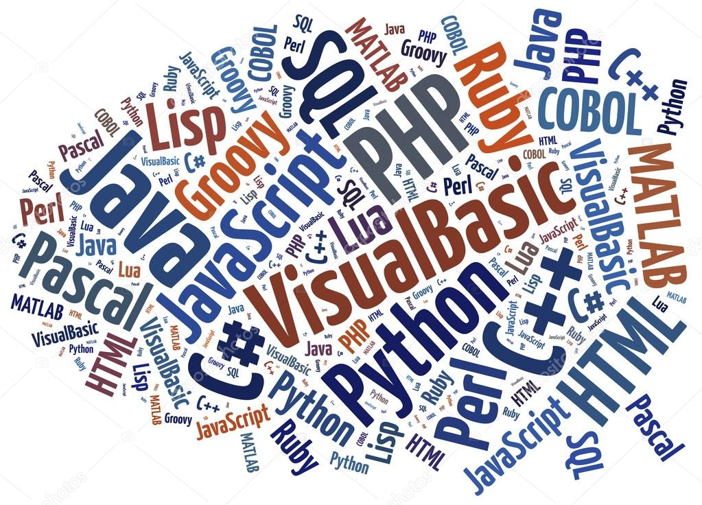

ARCHIVING

각종 소스코드 저장소입니다.
※학부생 때와 개발원 다닐 때 배웠던 언어들을 활용하여 프로젝트를 개발했으며
잘 기억이 나지 않는 기술도 있지만 기업이 해당 기술을 필요로 할 때 다시 공부를 하면
처음 배우는 것 보다 빠른 이해 및 습득이 되지 않을까 싶어서 전부 작성했습니다.
JAVA를 활용하여 제일 많은 프로젝트를 진행했기에
가장 이해도가 높고 친숙한 프로그래밍 언어입니다.
Servlet과 JSP 통해 자바 웹 페이지를 동적으로 생성했고
최대한 MVC패턴을 지키면서 설계한 경험이 있습니다.
두번째로 익숙한 프로그래밍 언어입니다.
Python을 활용해 데이터 시각화 및 웹 크롤링, 워드 클라우드 등
데이터 분석에 많이 썼었습니다.
또한 AI모델 설계를 위한 학습과 데이터 전처리 작업 경험이 있습니다.
학부생 때 배웠던 Node.js입니다. 익숙하지 않지만 Node.js를 통해 RestAPI개념을 다졌으며 프레임워크인 Express를 활용하여 간단하게 서버 개발 및 실시간 채팅 서비스 구현에 사용했었습니다.
웹 프로그래밍 관련해서 제일 먼저 배운 HTML입니다.
여러가지 태그 및 문법을 사용할 줄 알고 이해할 수 있습니다.
디자인에 빠지지않고 사용된 CSS입니다.
실질적으로 배운적은 없지만 경험을 통해
Class에 스타일을 지정해서 적용하고
타입과 태그에 스타일을 정의할 수 있습니다.
웹 페이지를 동적으로 나타내기 위해 사용된 JavaScript입니다.
코드가 익숙하지 않아 어렵게 작성했었지만 항상 프로젝트에 빠지지않고 활용했었습니다. 기본적인 문법만 작성하고 이해 가능합니다.
JAVA 백엔드 개발을 편하게 하기 위해 사용했던 프레임워크입니다.
배운 기간이 짧아 익숙하지는 않지만 Mybatis와 함께 프로젝트를
구현한 경험이 있고 Spring Boot를 포함해서 현재 가장 관심있고 공부중인 프레임워크 입니다.
가장 프로젝트에 많이 썼었던 DBMS입니다. OracleDB외에 MySQL, PostgreSQL를 써봤고 NoSQL인 MongoDB도 활용했던 경험이 있습니다. SQL문을 배우지는 않았지만 테이블 설계를 하다보니
익숙해졌으며 기본적인 SQL Query문은 쓸 수 있습니다.
AI프로그래밍을 하기 위해 사용했던 딥러닝 라이브러리입니다.
Keras를 가지고 Dense Layer구현 및 모델의 정확도와 손실 측정 등 다양하고 최적의 모델 설계를 했던 경험이 있습니다.
현재 JAVA와 더불어 관심있고 흥미를 느끼는 기술입니다.
소스코드 및 작업들을 업로드 하기 위한 형상관리 툴입니다.
실제로 GitHub를 통해 협업을 하거나 공유를 해본 적은 없지만
Git을 통해서 작업물을 push하는 등 개인용으로 쓰고 있습니다.
※ 학부생 때와 개발원 다닐 때 진행한 프로젝트들입니다.
각 프로젝트를 클릭 시 상세한 설명을 보실 수 있습니다.
팀 프로젝트
개인 프로젝트
팀 프로젝트
개인 프로젝트
각종 소스코드 저장소입니다.